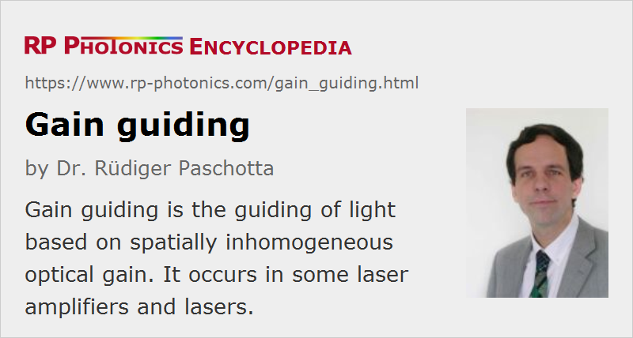

Gain Guiding
Definition: guiding of light based on spatially inhomogeneous optical gain
Categories: optical amplifiers, physical foundations
How to cite the article; suggest additional literature
Author: Dr. Rüdiger Paschotta
When propagating in a homogeneous medium, a laser beam will sooner or later expand. A common method for preventing this expansion is to use a guiding structure, called a waveguide, with a spatially varying refractive index profile. It is also possible, however, to achieve guiding purely with a spatially varying optical gain, and this is called gain guiding. The basic idea is simple: by amplifying the center parts of the beam more than the wings of the spatial profile, the beam width will be reduced, and this effect may be strong enough e.g. to counteract diffraction.
Note that gain guiding is generally accompanied by some degree of guiding or anti-guiding via refractive index inhomogeneities, since gain and refractive index are related to each other via Kramers–Kronig relations.
Particularly in high-gain amplifiers, e.g. in optical parametric amplifiers with pulsed pumping, gain guiding can strongly influence the output profile of the amplified wave. This even leads to limitations of the power scalability of such devices [3], because the signal beam tends to become too small to overlap fully with the pump beam in the last section of the nonlinear crystal.
In certain laser diodes, gain guiding is used for horizontal confinement of the optical field. This allows for nearly diffraction-limited emission in a device where the waveguide structure guides only in the vertical direction.
In most solid-state laser resonators, gain guiding plays only a minor role, since the gain is relatively small and other effects are stronger. In particular, thermal lensing tends to be more important, and for intense ultrashort pulses there can also be a significant self-focusing effect related to the Kerr nonlinearity.
Questions and Comments from Users
Here you can submit questions and comments. As far as they get accepted by the author, they will appear above this paragraph together with the author’s answer. The author will decide on acceptance based on certain criteria. Essentially, the issue must be of sufficiently broad interest.
Please do not enter personal data here; we would otherwise delete it soon. (See also our privacy declaration.) If you wish to receive personal feedback or consultancy from the author, please contact him e.g. via e-mail.
By submitting the information, you give your consent to the potential publication of your inputs on our website according to our rules. (If you later retract your consent, we will delete those inputs.) As your inputs are first reviewed by the author, they may be published with some delay.
Bibliography
| [1] | F. Salin and J. Squier, “Gain guiding in solid-state lasers”, Opt. Lett. 17 (19), 1352 (1992), doi:10.1364/OL.17.001352 |
| [2] | N. J. van Druten et al., “Observation of transverse modes in a microchip laser with combined gain and index guiding”, J. Opt. Soc. Am. B 18 (12), 1793 (2001), doi:10.1364/JOSAB.18.001793 |
| [3] | G. Arisholm et al., “Limits to the power scalability of high-gain optical parametric oscillators and amplifiers”, J. Opt. Soc. Am. B 21 (3), 578 (2004), doi:10.1364/JOSAB.21.000578 |
| [4] | R. Paschotta, case study on an actively Q-switched Nd:YAG laser, numerical simulation with gain guiding |
See also: gain, optical amplifiers, waveguides, thermal lensing
and other articles in the categories optical amplifiers, physical foundations
|  |
If you like this page, please share the link with your friends and colleagues, e.g. via social media:
These sharing buttons are implemented in a privacy-friendly way!